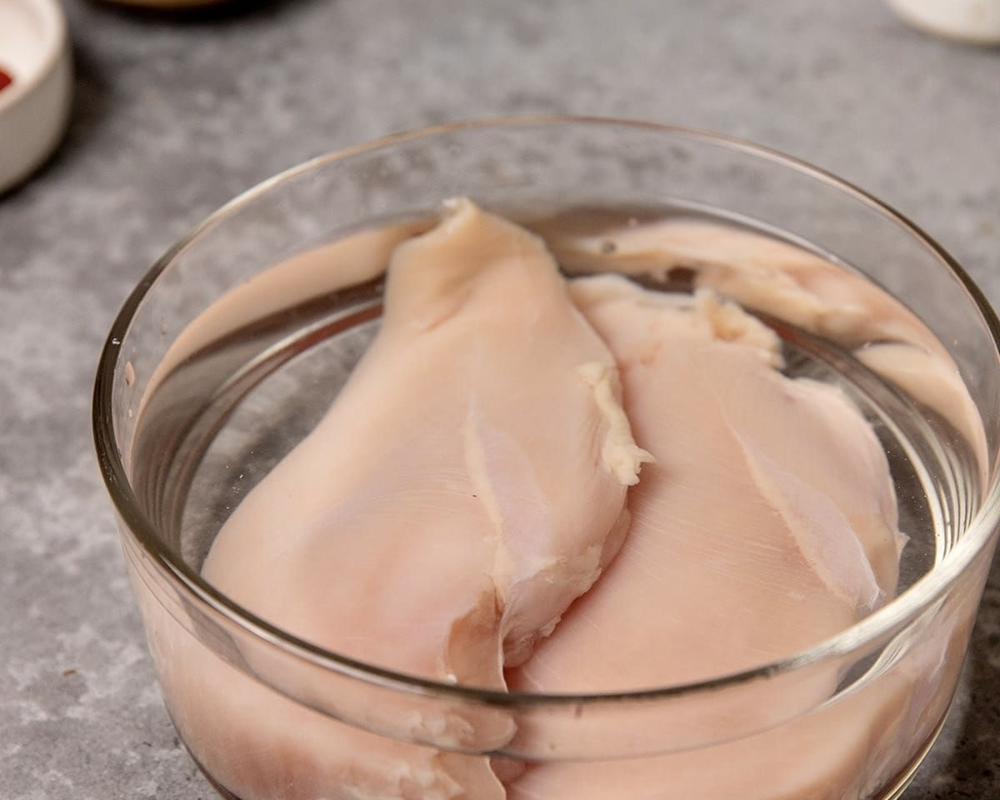
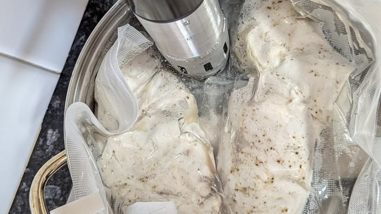
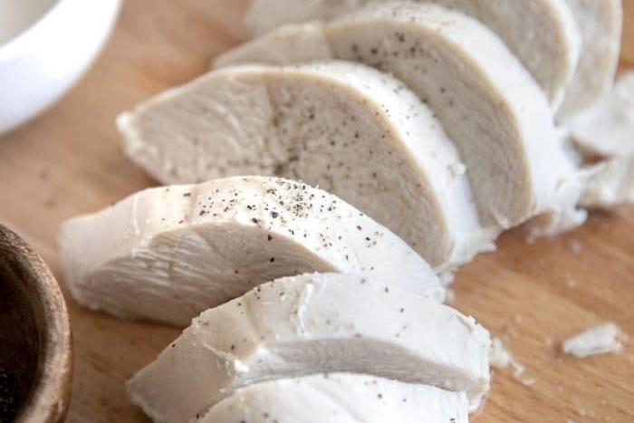

How We Make Our Chicken Chashu

Seasoned from the Inside Out
Fresh chicken breast is brined in salt and sugar for 24 hours. This helps the seasoning soak deep into the meat, keeping it moist and tender.

Low Heat, No Shortcuts
Chicken breast is seasoned with white pepper, garlic, and clove, then vacuum-sealed with olive oil. It is cooked at 63°C for 50–60 minutes. Low heat, no shortcuts — this keeps it juicy.

Fresh Until the Last Moment
Right after cooking, the chicken breast is placed in ice water to lock in the juices. It is kept fresh until needed, then sliced to order for each bowl.
Как мы готовим наш Куриный Тясю
Приправлено изнутри
Свежее куриное филе маринуется в рассоле из соли и сахара в течение 24 часов. Это помогает приправам проникнуть глубоко в мясо, сохраняя его сочным и нежным.
Низкая температура, без компромиссов
Куриное филе приправляется белым перцем, чесноком и гвоздикой, затем запаивается в вакуумный пакет с оливковым маслом. Готовится при температуре 63°C в течение 50–60 минут. Низкая температура, никаких сокращений — это сохраняет сочность.
Свежее до последнего момента
Сразу после приготовления куриное филе помещают в ледяную воду, чтобы сохранить все соки. Хранится в свежем виде до подачи, затем нарезается под заказ для каждой миски.
Ինչպես ենք պատրաստում մեր Հավի Չաշուն
Համեմված ներսից
Թարմ հավի կրծքամիսը աղաջրվում է աղի և շաքարի մեջ 24 ժամ։ Սա օգնում է համեմունքներին թափանցել մսի խորքը՝ պահելով այն հյութեղ և նուրբ։
Ցածր ջերմություն, առանց փոխզիջումների
Հավի կրծքամիսը համեմվում է սպիտակ պղպեղով, սխտորով և մեխակով, ապա կնքվում է վակուումային տոպրակում՝ ձիթապտղի յուղով։ Եփվում է 63°C-ում 50–60 րոպե։ Ցածր ջերմություն, առանց դյուրանցումների — սա պահում է հյութեղությունը։
Թարմ մինչև վերջին պահը
Եփելուց անմիջապես հետո հավի կրծքամիսը դրվում է սառցե ջրի մեջ՝ հյութերը փակելու համար։ Պահվում է թարմ մինչև անհրաժեշտ պահը, ապա կտրատվում է պատվերի համաձայն յուրաքանչյուր բաժակի համար։
チキンチャーシューができるまで
肉の奥まで、味を浸透させる
新鮮な丸鶏から取り出した鶏胸肉を、塩と砂糖をしっかりと溶かしたソミュール液に24時間漬け込む。この工程が肉の奥まで味を浸透させ、しっとりとした食感の土台を作る。
低温でじっくり、それがすべて
水気を丁寧に拭き取り、白胡椒、ニンニク、クローブで味と香りを整える。保水効果を上げるためにオリーブオイルとともに真空パックで密閉し、63°Cで50〜60分間低温調理する。高温ではなく、低温でじっくりと火入れすることでパサつかない鶏胸肉を作ることができる。
提供の瞬間まで、品質を守る
加熱後はすぐに氷水で急冷し、肉汁を閉じ込める。提供の瞬間まで品質を保ち、注文ごとにカットして添える。